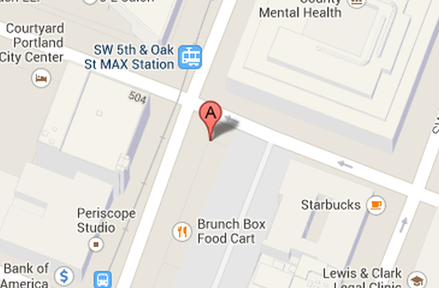

<nav-page id="app-page" ng-controller="AppCtrl">


  <!--
  Create tabs with an icon and text label, using the tabs-positive style (blue by default),
  and disabling header title animation when switching tabs.
  -->
  <tabs tabs-style="tabs-icon-top" tabs-type="tabs-assertive" animate-nav="false">

    <!-- Pets tab -->
    <tab title="Menu" icon="icon ion-home" ng-controller="PetsTabCtrl">
      <content has-header="true" has-tabs="true">
          <div class="list card" ng-repeat="pet in pets">

  <a href="#/menu/{{pet.id}}" ng-class="{disabled: !pet.available, special: pet.special}" class="item item-thumbnail-left">
    
    <h3>{{pet.title}}</h3>
      {{pet.description}}
  </a>
</div>
      </content>
    </tab>

    <!-- Adoption tab -->
    <tab title="Location" icon="icon ion-earth">
      <content has-header="true" has-tabs="true">
        <div class="padding">
            <div class="item item-body">
                <h2>Find Us</h2>
                <p></p>
    
  </div>
            </div>
        
      </content>
    </tab>

    <!-- Home tab -->
    <tab title="About" icon="icon ion-search">
      <content has-header="true" has-tabs="true" padding="true">
        <h3>About this app</h3>
        <p>We built this over a weekend. Go us!
        </p>
      </content>
    </tab>

  </tabs>
</nav-page>
